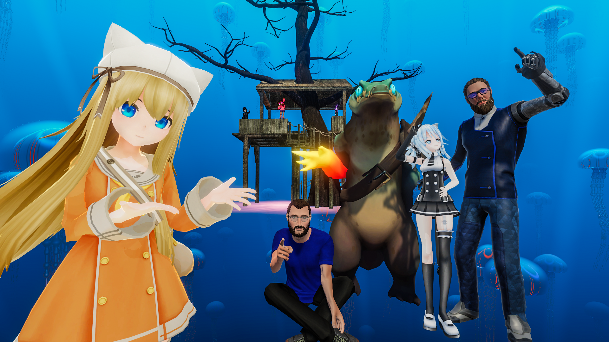
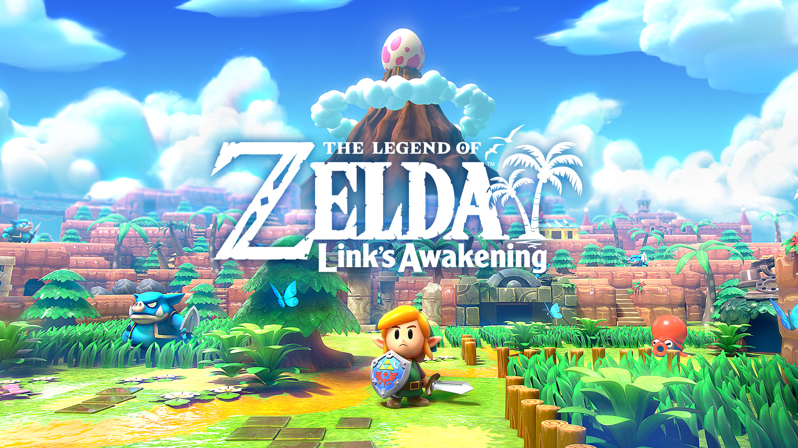
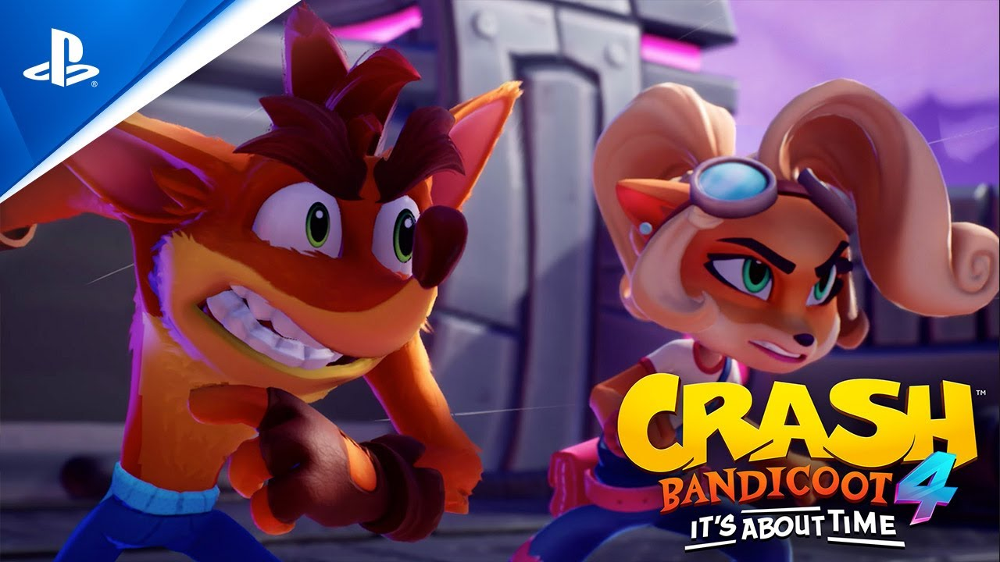

Blogs:
Top 3 must-play games of 2023
Welcome back, fellow gamers! It's TheJustRusik here, and today, I'm thrilled to share my thoughts on the top 3 must-play games of 2023. It's shaping up to be an incredible year for gaming, and these titles have already made a big splash. So, grab your controllers, put on your headsets, and let's dive into the action!
1. Cyberpunk 2077

Kicking off our list is the highly anticipated "Cyberpunk Chronicles." This futuristic open-world RPG promises an immersive experience in a dystopian world dominated by machines. The attention to detail and gripping narrative make it a game you simply can't miss.
2. Legends of Eldoria: The Quest for Destiny

For fans of epic fantasy adventures, "Legends of Eldoria" is a game changer. With its breathtaking visuals and rich storytelling, it transports players to a magical realm where they must uncover the secrets of destiny. This one's a masterpiece in the making.
3. Galactic Outlaws: Space Odyssey
If you're yearning for some intergalactic action, "Galactic Outlaws" has got you covered. Explore vast star systems, build your crew of spacefaring misfits, and take on epic heists and missions. The universe is your playground..
The Future of Virtual Reality Gaming
Hello, gaming enthusiasts! Today, I want to dive into the exciting world of virtual reality gaming. With the rapid advancements in VR technology, we're on the cusp of a gaming revolution. Join me as we explore the potential and the top VR games to look forward to!
1. VRChat: A Virtual Social Experience
VRChat is a social platform where you can meet people, play games, and explore user-generated worlds in virtual reality. It's redefining how we connect with others in the gaming community.
2. Half-Life: Alyx - Immersive Action

Half-Life: Alyx takes the iconic franchise into the world of VR. It offers stunning visuals, immersive gameplay, and a gripping story that will keep you on the edge of your seat.
3. Beat Saber: Rhythm and Lightsabers
Beat Saber combines music and lightsabers in an addictively fun rhythm game. Slice through blocks to the beat and get your heart pumping with this VR sensation.
Exploring the World of Indie Games
Hey there, gamers! Today, let's take a journey into the vibrant and creative world of indie games. These smaller, often passion-driven projects have given us some of the most unique and memorable gaming experiences. Join me in discovering a few hidden gems!
1. Hades - Rogue-like Excellence
Hades is a roguelike dungeon crawler that has taken the gaming world by storm. With its compelling story, fast-paced combat, and stunning art, it's a must-play for any indie game enthusiast.
2. Hollow Knight - Metroidvania Magic
Hollow Knight is a beautifully crafted metroidvania game. Explore a mysterious underground world, battle unique creatures, and uncover the secrets hidden in the depths.
3. Celeste - A Tale of Resilience
Celeste is a touching platformer that tells a heartfelt story of mental health and determination. Its challenging gameplay and touching narrative make it an indie masterpiece.
Gaming Nostalgia: The Classics Reimagined
Greetings, fellow gamers! Today, let's take a trip down memory lane and revisit some classic games that have been reimagined for modern audiences. These remakes and remasters capture the essence of the originals while adding new layers of excitement.
1. Resident Evil 2 Remake - Survival Horror Redefined
The Resident Evil 2 Remake brings the terror of Raccoon City to life with stunning visuals and revamped gameplay. It's a spine-tingling experience that pays homage to the survival horror classic.
2. The Legend of Zelda: Link's Awakening - An Island Adventure
Link's Awakening returns with a charming and whimsical remake. Join Link on his journey to awaken the Wind Fish in this beloved Game Boy classic reimagined for the Nintendo Switch.
3. Crash Bandicoot 4: It's About Time - Bandicoot Comeback
Crash Bandicoot is back with a bang in "It's About Time." This sequel captures the nostalgic joy of the original games while introducing new gameplay elements and vibrant worlds.